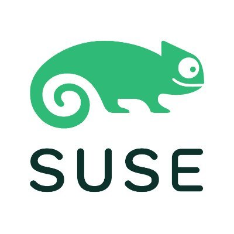
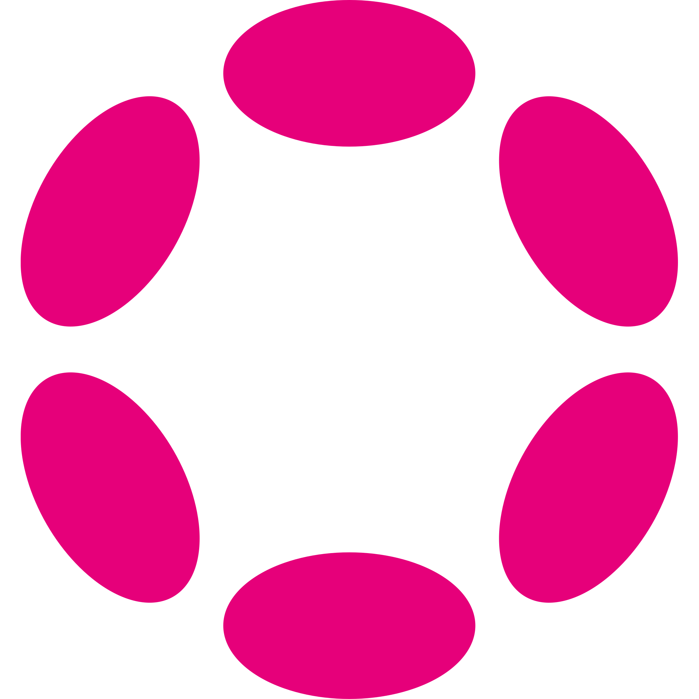
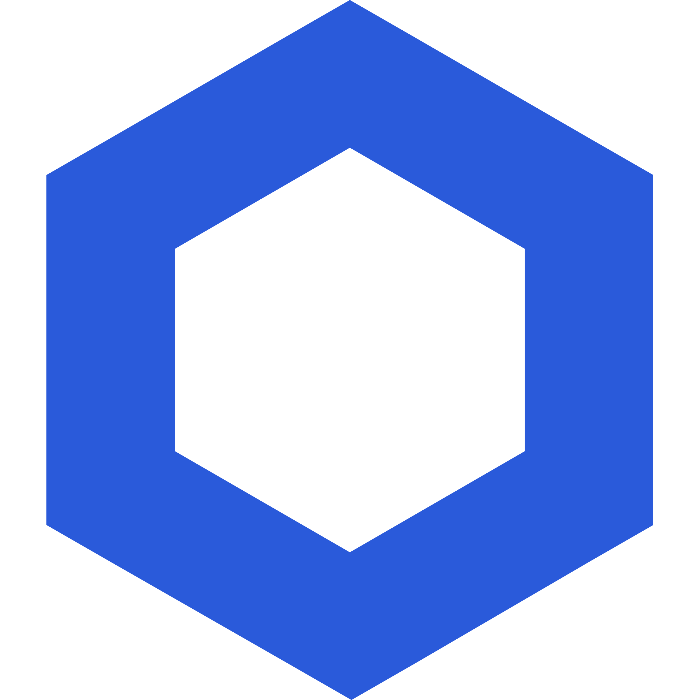
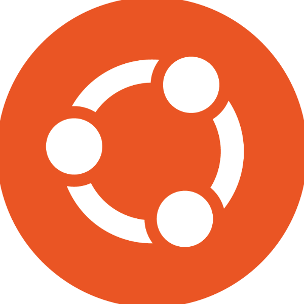
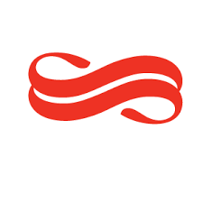
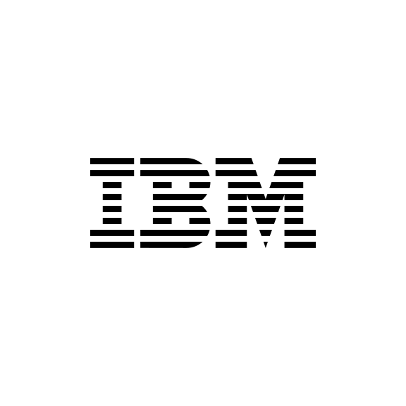

Dónde he trabajado
Experiencia

Technical Product Marketing Manager
SUSEMarketing de producto para Rancher y Kubernetes, incluido SUSE Rancher for AWS. Escribo notas de campo desde mi laboratorio en EKS y trabajo con equipos de plataforma que gestionan flotas de Kubernetes.

Head of Product Marketing
Algorand FoundationMonté el área de marketing de producto desde cero. Pasamos de 186 a 440 desarrolladores activos al mes y organicé un programa de hackathons con más de 800 asistentes y más de 205 proyectos.
Web3
Head of Product Marketing
Polygon LabsDirigí el marketing de producto de zkEVM y CDK. Trabajé codo con codo con DevRel para que los desarrolladores tuvieran todo lo necesario para construir en Polygon y quisieran hacerlo.
Web3
Developer Product Marketing Manager
Parity Labs (Polkadot)Ayudé a Polkadot a contar una historia más clara a los desarrolladores. Llevé programas y hackathons para hacer crecer la comunidad y que los desarrolladores quisieran formar parte de la plataforma.
Web3
Product Marketing Lead
Chainlink LabsMe hice cargo de todo el portfolio de producto e hice que el mercado entendiera cada producto, entre ellos Proof of Reserve y Data Feeds. Mi trabajo era que se entendiera por qué Chainlink era infraestructura esencial.
Web3Head of Technical Marketing
SUSEMonté un equipo de marketing técnico de cuatro personas para Rancher, NeuVector y SUSE Linux Enterprise, y convertí material muy técnico en contenido que los equipos de ventas podían usar.
Web2Developer Audience Lead
MicrosoftCentrado por completo en la comunidad de desarrolladores, a la escala de Microsoft. Coordiné a diez profesionales de developer relations y creé programas, contenido y eventos para acercar a los desarrolladores a la nube de Microsoft.
Web2Principal Technical Marketing Manager
Red HatCasi cinco años construyendo el marketing técnico de los productos de gestión de Red Hat: CloudForms, Satellite y Ansible. Creé contenido, demos y relatos para que los equipos de TI entendieran por qué el open source era la apuesta correcta para su infraestructura.
Web2
Cloud Architect
Canonical Ltd.Acompañé a clientes en los primeros días de OpenStack y la nube privada. Estuve en todo, desde la preventa hasta la implantación, y eso me dio una base técnica en la que sigo apoyándome.
Web2
Solutions Architect
Logicalis SpainCuatro años apoyando a equipos de ventas con demos, presentaciones técnicas y propuestas de solución complejas. Llevé el Demo Center y amplié su catálogo de 6 a 28 productos. Aquí aprendí a hacer tangible la tecnología para quien no vive dentro de ella.
Web2
Sistemas e infraestructura
Ecosistema IBMDonde empezó todo. Di formación y soporte de AIX, WebSphere, Tivoli y Power Systems de IBM, en puestos de soporte, consultoría y formación en distintas empresas. La base técnica sobre la que se construye todo lo demás.
Web2